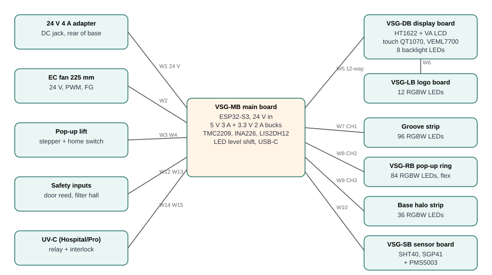

VIAN Slope Glow air purifier
Everything a factory needs to make this unit: body parts and materials, every port and opening, the filter, 5 circuit boards with BOM and netlists, the full wiring harness, display, lights, pop-up lift, firmware source, 3D-print files, assembly, tests and certifications. Every file downloads on its own.
Drag the 3D model to rotate. Buttons under it switch fan mode (the top pops up), light effect and colours.
Body and mechanical parts
Injection-moulded PC/ABS housing (UL94 V-0, UV-stabilised), opal and frosted PC light parts, aluminium lift plate. No steel or GI sheet in the body; one steel ballast plate in the base for tip-over stability.
| Code | Part | Material | Process | Colour / finish | Wall | Size | Qty | Notes |
|---|---|---|---|---|---|---|---|---|
| P01 | Lower intake sleeve (4 sides, 360 deg perforated) | PC/ABS, UL94 V-0, UV-stabilised | Injection moulding, 2 cavities (rear U + front panel) | Sage / Sand / Ice / Graphite (moulded-in colour) | 2.5 mm | 450 x 470 x 530 mm | 1 | Perforation 2.0 mm holes, 4.0 mm hex pitch, 22 % open area; 1 deg draft; front panel is removable |
| P02 | Front intake panel (removable, filter access) | PC/ABS V-0 | Injection moulding | Same as P01 | 2.5 mm | 310 x 525 mm (front face) | 1 | 4 x N35 magnets 10 x 3 mm + 2 bottom hooks; carries door-switch magnet |
| P03 | Upper shell with 8 deg sloped top | PC/ABS V-0, white | Injection moulding | Matte warm white, texture MT-11010 | 2.5 mm, 0.8 mm at display and logo windows | 450 x 470 x 400-466 mm | 1 | Display window 230 x 78 mm and logo window 132 x 40 mm thinned to 0.8 mm (hidden-till-lit); light sensor window 3 mm dia |
| P04 | Groove light diffuser ring | PC, opal 50 % transmission | Injection moulding | Opal white | 1.5 mm | 492 x 512 x 14 mm | 1 | U-channel holds the LED strip; snaps between P01 and P03 |
| P05 | Pop-up cap | PC/ABS V-0 | Injection moulding | Matte warm white | 2.5 mm | 436 x 456 x 28 mm | 1 | Bosses for the lift plate, 4 x M3 inserts |
| P06 | Outlet grille | PC/ABS V-0 | Injection moulding | Graphite | 2.0 mm | 380 x 400 mm | 1 | Slots 3 x 40 mm, 52 % open; clips into P05 |
| P07 | Pop-up ring skirt (diffuser) | PC, frosted | Injection moulding | Frosted clear | 1.2 mm | 430 x 450 x 44 mm | 1 | Holds the flex light ring RB; slides inside P03 top opening |
| P08 | Lift plate | Aluminium 5052, 2 mm | Laser cut + bend | Natural | 2 mm | 360 x 380 mm | 1 | Carries cap; 2 guide bushing holes + lead-screw nut; earthed |
| P09 | Lift guide rods | Stainless steel 304 | Ground rod | - | 6 mm dia | 6 x 100 mm | 2 | With igus JFM-0608-06 polymer bushings |
| P10 | Fan deck / filter seal plate | PP + 30 % glass fibre | Injection moulding | Black | 3.0 mm | 440 x 460 mm | 1 | Inlet ring 230 mm dia; PU foam seal to filter top; grommet G1 for cables |
| P11 | Fan scroll / outlet duct | ABS V-0 | Injection moulding | Black | 2.5 mm | 400 x 420 x 260 mm | 1 | Guides fan air to the 360 deg cap gap |
| P12 | Base / plinth | PC/ABS V-0 + 1.2 kg steel ballast plate | Injection moulding | Graphite | 3.0 mm | 460 x 480 x 70 mm | 1 | Tip-over stable to 10 deg; 4 rubber feet; DC jack at rear |
| P13 | Base halo diffuser ring | PC, opal | Injection moulding | Opal white | 1.2 mm | 470 x 490 x 5 mm | 1 | Holds 36-LED strip facing the floor |
| P14 | Display light guide | PMMA, laser-dot pattern | Laser cut + dot etch | Clear | 3 mm | 214 x 72 mm | 1 | Edge-lit by 8 RGBW LEDs, white reflector film behind |
| P15 | Logo light guide + VIAN mask | PMMA + black printed mask | Laser cut + screen print | Clear / black | 3 mm | 132 x 40 mm | 1 | Mask leaves only the VIAN letters open |
| P16 | Rear service cover | PC/ABS V-0 | Injection moulding | Matte warm white | 2.0 mm | 90 x 40 mm | 1 | Covers USB-C and reset pin-hole; rubber plug |
| P17 | Filter tray rails | POM | Injection moulding | Natural | - | 400 mm | 2 | Filter slides out to the front |
| P18 | Display/touch window IMD film | PC film 0.175 mm, printed | In-mould decoration | White with icon print | - | 240 x 90 mm | 1 | Prints icon outlines that show only when lit |
| F01 | Filter HC-360 (square tube, 4-sided) | H13 glass-fibre mini-pleat 50 mm + 10 mm activated carbon (MnO2 coated) | Filter maker | - | - | 400 x 400 x 480 mm, centre channel 280 x 280 | 1 | Air enters all 4 sides, exits up the centre; PU top gasket; magnet in frame for presence sensor; pull strap |
| F02 | Pre-filter sleeve PF-360 (washable) | PET mesh 40 mesh | Sewn sleeve with hook-and-loop | Grey | - | Wraps F01 | 1 | Wash up to 5 times; app tracks washes |
| M01 | EC centrifugal fan, backward curved | 24 V DC EC, PWM + FG | Bought-in | - | - | 225 mm impeller | 1 | >= 900 m3/h free air, <= 55 W, ball bearing, PWM 25 kHz |
| M02 | Micro stepper linear actuator | NEMA 8 (20 mm) 2-phase, T6 x 2 mm lead screw, 80 mm | Bought-in | - | - | 20 x 20 x 30 mm + screw | 1 | 0.5 A, 200 steps/rev, anti-backlash nut |
| M03 | Home micro-switch | Omron D2F-01L | Bought-in | - | - | - | 1 | Closed when the cap is fully down |
| M04 | Power adapter 24 V 4 A | Mean Well GST96A24-P1M or BIS-approved equivalent | Bought-in | - | - | - | 1 | IEC 62368-1, BIS IS 13252, level VI efficiency |
| M05 | DC panel jack 5.5 x 2.5 mm | CUI PJ-063AH or equivalent | Bought-in | - | - | - | 1 | Rear of base |
| M06 | Groove LED strip 1.6 m | SK6812 RGBW-WW, 60/m, 10 mm, IP30 | Bought-in | - | - | 96 LEDs | 1 | |
| M07 | Base halo LED strip 0.6 m | SK6812 RGBW-WW, 60/m, 10 mm | Bought-in | - | - | 36 LEDs | 1 | |
| M08 | PM2.5 sensor | Plantower PMS5003 | Bought-in | - | - | 50 x 38 x 21 mm | 1 | Mounted on intake side with its own inlet path |
| M09 | Door reed switch + magnet | Littelfuse 59140-1-S-00-A + 57140-000 | Bought-in | - | - | - | 1 | |
| M10 | Filter hall sensor | TI DRV5032FB on carrier + 10 x 2 mm magnet in filter | Bought-in | - | - | - | 1 | |
| M11 | UV-C LED module (Hospital/Pro only) | 2 x 275 nm UV-C LED, 24 V, aluminium reflector | Bought-in | - | - | - | 1 | Faces filter outlet face; no ozone |
Fasteners and small parts
| Item | Spec | Qty | Where |
|---|---|---|---|
| Self-tapping screw for plastics | PT K30 x 8 (WN 1452), A2 | 24 | Shell joins, boards to bosses |
| Self-tapping screw for plastics | PT K40 x 12, A2 | 8 | Fan deck, base |
| Machine screw | M3 x 6 ISO 7380, A2 | 12 | Lift plate, cap inserts |
| Machine screw | M4 x 10 ISO 7380, A2 | 4 | Fan to fan deck (with rubber grommets) |
| Brass heat-set insert | M3 x 5.7 | 8 | Pop-up cap, base |
| Rubber anti-vibration grommet | Fan mount, 40 Shore A | 4 | Fan |
| Neodymium magnet | N35 10 x 3 mm, Ni | 5 | Front panel (4), filter frame (1) |
| Rubber foot | 25 mm dia x 6 mm, 60 Shore A | 4 | Base |
| Cable tie mount + tie | Self-adhesive 20 x 20 | 10 | Harness routing |
| PU foam gasket | 10 x 8 mm closed cell | 2 | Filter top seal (1.7 m), fan deck |
Every port, window and opening
| Opening / port | Face | Position | Size | Purpose |
|---|---|---|---|---|
| 360 deg intake perforation | All 4 sides of lower sleeve | z = 90 to 580 mm | 2.0 mm holes, 4.0 mm hex pitch | Dirty air in from every side |
| 360 deg outlet gap | Top, under pop-up cap | z = 1,000-1,080 mm (slope) | 0 / 15 / 30 / 46 mm lift | Clean air out, all round |
| Outlet grille | Top of pop-up cap | Centre | 380 x 400 mm, 3 x 40 mm slots | Clean air out, upward |
| Hidden display window | Front, upper shell | Centre at z = 925 mm | 230 x 78 mm, wall 0.8 mm | Display glows through; touch keys under it |
| Touch keys (Power, Mode, Light) | Front, below display text | z = 885 mm | 3 x 14 mm dia icons, 40 mm pitch | Capacitive through 0.8-2.5 mm plastic |
| Ambient light sensor window | Front, above display | z = 975 mm | 3 mm dia, thinned | Auto brightness / night mode |
| VIAN logo window | Front, upper shell | Centre at z = 800 mm | 132 x 40 mm, wall 0.8 mm | Lit logo in light-strip colour |
| Groove light line | All round, z = 600-614 mm | Between P01 and P03 | 14 mm high opal ring | Ambient light |
| Base halo slot | Underside of base, all round | z = 3-8 mm | 5 mm opal ring | Floor glow |
| Front intake panel | Front, lower sleeve | z = 75-600 mm | 310 x 525 mm | Remove to change filter (door switch) |
| DC jack 24 V | Rear of base | z = 35 mm, centre | 8 mm hole for PJ-063AH | Power in |
| Cable clip | Rear of base | Next to DC jack | R-clip for 3.5 mm cable | Strain relief |
| USB-C service port | Rear of upper shell, under P16 cover | z = 700 mm | 9.5 x 3.6 mm | Firmware + diagnostics |
| Reset pin-hole | Rear, under P16 cover | z = 700 mm, 20 mm right of USB-C | 1.5 mm dia | Hardware reset |
| Carry recesses | Left and right sides, upper shell | z = 640-670 mm | 140 x 30 mm, 25 mm deep | Lifting the unit |
| Label recess | Rear, base | z = 10-60 mm | 90 x 50 mm | Rating label, QR, serial, Wi-Fi password |
| Internal cable channel | Rear inside corner | Base to upper shell | 16 mm dia + grommet G1 in fan deck | Harness route |
HC-360 square-tube filter
Design change for true 360° cleaning: the flat HC-2 pack only faces one side, so this design uses a 4-sided square-tube filter. Air enters all 4 sides and leaves up the centre to the fan.
| Item | Specification |
|---|---|
| Name | HC-360 square-tube filter (replaces the flat HC-2 pack for this 360 deg design) |
| Size | 400 x 400 x 480 mm outer, 280 x 280 mm centre channel |
| Layers | PF-360 washable pre-filter sleeve -> 10 mm activated carbon (MnO2 coated, formaldehyde) -> 50 mm H13 glass-fibre mini-pleat |
| Face area | 0.77 m2 (about 4 x the flat pack), so lower air speed through the media, longer life, quieter |
| Seal | PU foam gasket on top, compressed by the fan deck; closed bottom plate |
| Sensor | Magnet in the frame corner for the hall presence sensor |
| Retail / cost | INR 3,999 retail; landed cost estimate INR 1,800-2,600 |
| Life | Calculated from real dust load + fan power rise, not a fixed timer (typically 6-12 months) |
5 circuit boards
Each board has its BOM (manufacturer part numbers), a netlist (every net and pin) and a DXF outline with mounting holes. A PCB layout engineer draws the schematic and layout from these; then the PCB house produces Gerbers.

VSG-MB · Main board120 x 80 mm · 105 parts · 84 nets
Build: 4-layer FR-4, 1.6 mm, ENIG, green mask. Mounted: Rear of upper shell, behind the fan scroll, USB-C at the rear service window.
| References | Qty | Description | Manufacturer part number | Footprint | Fitting |
|---|---|---|---|---|---|
| U1 | 1 | Wi-Fi/BLE MCU module, 8 MB flash, 2 MB PSRAM | ESP32-S3-WROOM-1-N8R2 | Espressif module 18x25.5 | |
| J1 | 1 | 24 V DC input header, 2-pin 4.2 mm | Molex 39-28-1023 (5566-02A) | Mini-Fit Jr 2x1 | |
| F1 | 1 | Fuse 6.3 A fast, 2410 | Littelfuse 0466006.NRHF | 2410 | |
| Q1 | 1 | P-MOSFET reverse-polarity protection -30 V | AO4407A | SOIC-8 | |
| R1 R31 R33 | 3 | 100 k 0603 | RC0603FR-07100KL | 0603 | |
| D2 | 1 | Zener 15 V gate clamp | BZT52C15 | SOD-123 | |
| D1 | 1 | TVS 28 V 600 W | SMBJ28A | SMB | |
| C1 | 1 | 470 uF 35 V electrolytic low-ESR | Panasonic EEU-FR1V471 | D10 x 16 | |
| C2 C3 C9 | 3 | 10 uF 50 V X7R 1210 | GRM32ER71H106KA12 | 1210 | |
| U2 | 1 | Buck 3.8-36 V in, 3 A, adjustable (5 V) | TI LMR33630ADDAR | SO-8 PowerPAD | |
| R2 | 1 | 100 k 1 % 0603 (FB top) | RC0603FR-07100KL | 0603 | |
| R3 | 1 | 24.9 k 1 % 0603 (FB bottom) | RC0603FR-0724K9L | 0603 | |
| R4 | 1 | 100 k 0603 (EN pull-up) | RC0603FR-07100KL | 0603 | |
| C4 | 1 | 100 nF 50 V 0603 (boot) | GCM188R71H104KA57 | 0603 | |
| C5 | 1 | 1 uF 16 V 0603 (VCC) | GRM188R61C105KA93 | 0603 | |
| L1 | 1 | 6.8 uH 6 A shielded | Coilcraft XAL6060-682MEB | 6.7 x 6.7 | |
| C6 C7 | 2 | 47 uF 10 V X5R 1210 | GRM32ER61A476KE20 | 1210 | |
| C13 | 1 | 1000 uF 10 V electrolytic (LED bulk) | Panasonic EEU-FR1A102 | D10 x 16 | |
| U3 | 1 | Buck 3.8-32 V in, 2 A, fixed 3.3 V | Diodes AP63203WU-7 | TSOT-26 | |
| L2 | 1 | 4.7 uH 3 A shielded | Bourns SRP5030T-4R7M | 5.5 x 5.0 | |
| C8 | 1 | 100 nF 50 V 0603 (BST) | GCM188R71H104KA57 | 0603 | |
| C10 C11 | 2 | 22 uF 10 V X5R 0805 | GRM21BR61A226ME44 | 0805 | |
| C15 | 1 | 10 uF 10 V 0805 (ESP32 bulk) | GRM21BR61A106KE19 | 0805 | |
| C16 | 1 | 100 nF 0402 (ESP32) | GRM155R71C104KA88 | 0402 | |
| R5 | 1 | 10 k 0603 (EN pull-up) | RC0603FR-0710KL | 0603 | |
| C12 | 1 | 1 uF 0603 (EN delay) | GRM188R61C105KA93 | 0603 | |
| R6 | 1 | 10 k 0603 (BOOT pull-up) | RC0603FR-0710KL | 0603 | |
| SW1 | 1 | Tactile switch BOOT | C&K PTS526 SM15 SMTR2 LFS | 5.2 x 5.2 | |
| SW2 | 1 | Tactile switch RESET (reachable through back pin-hole) | C&K PTS526 SM15 SMTR2 LFS | 5.2 x 5.2 | |
| J13 | 1 | USB-C receptacle 16-pin, mid-mount, on board rear edge | GCT USB4105-GF-A | USB4105 | |
| R7 | 1 | 5.1 k 0603 (CC1) | RC0603FR-075K1L | 0603 | |
| R8 | 1 | 5.1 k 0603 (CC2) | RC0603FR-075K1L | 0603 | |
| U8 | 1 | USB ESD protection | ST USBLC6-2SC6 | SOT-23-6 | |
| R22 | 1 | 1 M 0603 (shield) | RC0603FR-071ML | 0603 | |
| C17 | 1 | 4.7 nF 250 V 1206 (shield) | GRM31BR72E472KW01 | 1206 | |
| U5 | 1 | Quad buffer, 5 V, TTL inputs (level shift) | Nexperia 74AHCT125PW | TSSOP-14 | |
| C18 C19 C27 | 3 | 100 nF 0603 | GCM188R71H104KA57 | 0603 | |
| R23 R24 R25 R26 | 4 | 33 R 0603 (data series) | RC0603FR-0733RL | 0603 | |
| J6 | 1 | Groove light strip CH1, JST XH 3 | JST B3B-XH-A | XH 3 | |
| J7 | 1 | Pop-up ring CH2, JST XH 4 | JST B4B-XH-A | XH 4 | |
| J8 | 1 | Base halo strip CH3, JST XH 3 | JST B3B-XH-A | XH 3 | |
| R9 | 1 | 5 mOhm 1 % 2512 3 W (fan shunt) | Vishay WSL2512R0050FEA | 2512 | |
| U7 | 1 | Current / power monitor, I2C 0x40 | TI INA226AIDGSR | VSSOP-10 | |
| J2 | 1 | EC fan, JST XH 4 (24 V, GND, PWM, FG) | JST B4B-XH-A | XH 4 | |
| Q2 | 1 | N-MOSFET fan PWM open drain | 2N7002 | SOT-23 | |
| R10 R30 | 2 | 100 R 0603 | RC0603FR-07100RL | 0603 | |
| R11 | 1 | 100 k 0603 (gate pull-UP: holds fan stopped while the MCU boots) | RC0603FR-07100KL | 0603 | |
| R12 | 1 | 10 k 0603 (FG pull-up) | RC0603FR-0710KL | 0603 | |
| R13 | 1 | 1 k 0603 (FG series) | RC0603FR-071KL | 0603 | |
| C14 | 1 | 1 nF 0603 (FG filter) | GRM1885C1H102JA01 | 0603 | |
| U4 | 1 | Silent stepper driver, UART, StallGuard | Trinamic/ADI TMC2209-LA | QFN-28 5x5 | |
| R14 | 1 | 1 k 0603 (UART TX into PDN_UART) | RC0603FR-071KL | 0603 | |
| R15 | 1 | 0.11 R 1 % 0805 (sense A) | Yageo RL0805FR-7W0R11L | 0805 | |
| R16 | 1 | 0.11 R 1 % 0805 (sense B) | Yageo RL0805FR-7W0R11L | 0805 | |
| C20 | 1 | 22 nF 50 V 0603 (charge pump) | GRM188R71H223KA01 | 0603 | |
| C21 | 1 | 100 nF 50 V 0603 (VCP) | GCM188R71H104KA57 | 0603 | |
| C22 | 1 | 2.2 uF 10 V 0603 (5VOUT) | GRM188R61A225KE34 | 0603 | |
| C23 | 1 | 100 uF 35 V electrolytic (VM) | Panasonic EEE-FK1V101P | D6.3 x 7.7 | |
| C24 | 1 | 100 nF 50 V 0603 (VM) | GCM188R71H104KA57 | 0603 | |
| J3 | 1 | Lift stepper motor, JST PH 4 | JST B4B-PH-K-S | PH 4 | |
| J4 | 1 | Lift home switch, JST PH 2 | JST B2B-PH-K-S | PH 2 | |
| R27 | 1 | 10 k 0603 (home pull-up) | RC0603FR-0710KL | 0603 | |
| C25 | 1 | 100 nF 0603 (home debounce) | GCM188R71H104KA57 | 0603 | |
| U6 | 1 | 3-axis accelerometer (tip-over), I2C 0x18 | ST LIS2DH12TR | LGA-12 2x2 | |
| C26 | 1 | 100 nF 0402 | GRM155R71C104KA88 | 0402 | |
| R17 | 1 | 4.7 k 0603 (I2C0 SDA pull-up) | RC0603FR-074K7L | 0603 | |
| R18 | 1 | 4.7 k 0603 (I2C0 SCL pull-up) | RC0603FR-074K7L | 0603 | |
| J5 | 1 | Display board link, JST PH 12 | JST B12B-PH-K-S | PH 12 | |
| R28 | 1 | 10 k 0603 (QT CHANGE pull-up) | RC0603FR-0710KL | 0603 | |
| J9 | 1 | Sensor board link, JST PH 8 | JST B8B-PH-K-S | PH 8 | |
| R19 | 1 | 2.2 k 0603 (I2C1 SDA pull-up, long cable) | RC0603FR-072K2L | 0603 | |
| R20 | 1 | 2.2 k 0603 (I2C1 SCL pull-up, long cable) | RC0603FR-072K2L | 0603 | |
| J10 | 1 | Front panel door reed switch, JST PH 2 | JST B2B-PH-K-S | PH 2 | |
| R21 | 1 | 10 k 0603 (door pull-up) | RC0603FR-0710KL | 0603 | |
| J11 | 1 | Filter presence hall sensor, JST PH 3 | JST B3B-PH-K-S | PH 3 | |
| R29 | 1 | 10 k 0603 (filter pull-up) | RC0603FR-0710KL | 0603 | |
| BZ1 | 1 | Passive magnetic buzzer 3.6 V 2.7 kHz | Jiangsu Huaneng MLT-8530 | 8.5 x 8.5 | |
| Q3 | 1 | N-MOSFET buzzer | 2N7002 | SOT-23 | |
| D5 | 1 | Flyback diode | 1N4148WS | SOD-323 | |
| K1 | 1 | Relay 24 V coil, 5 A contact | Hongfa HF46F/24-HS1 | HF46F | Not fitted on Home (Hospital/Pro only) |
| Q4 | 1 | N-MOSFET relay driver | AO3400A | SOT-23 | Not fitted on Home (Hospital/Pro only) |
| R32 | 1 | 100 R 0603 | RC0603FR-07100RL | 0603 | Not fitted on Home (Hospital/Pro only) |
| D4 | 1 | Relay flyback diode | 1N4148WS | SOD-323 | Not fitted on Home (Hospital/Pro only) |
| J12 | 1 | UV-C module output, JST XH 2 | JST B2B-XH-A | XH 2 | Not fitted on Home (Hospital/Pro only) |
| J14 | 1 | UV-C door interlock micro-switch loop, JST PH 2 | JST B2B-PH-K-S | PH 2 | Not fitted on Home (Hospital/Pro only) |
| D6 | 1 | Green LED power indicator 0603 | Kingbright APT1608SGC | 0603 | |
| R34 | 1 | 1 k 0603 | RC0603FR-071KL | 0603 | |
| TP1 | 1 | Test point VIN_24 | Keystone 5015 | TP | |
| TP2 | 1 | Test point 5V_LED | Keystone 5015 | TP | |
| TP3 | 1 | Test point 3V3 | Keystone 5015 | TP | |
| TP4 | 1 | Test point GND | Keystone 5015 | TP | |
| TP5 | 1 | Test point TXD0 (factory log) | Keystone 5015 | TP | |
| TP6 | 1 | Test point RXD0 | Keystone 5015 | TP |
VSG-DB · Display board220 x 70 mm · 34 parts · 66 nets
Build: 2-layer FR-4, 1.0 mm, white mask. Mounted: Behind the hidden display window, front of upper shell.
| References | Qty | Description | Manufacturer part number | Footprint | Fitting |
|---|---|---|---|---|---|
| J1 | 1 | Main board link, JST PH 12 | JST B12B-PH-K-S | PH 12 | |
| U1 | 1 | Segment LCD driver 32 SEG x 8 COM | Holtek HT1622 | LQFP-52 | |
| R1 | 1 | 47 k 0603 (VLCD bias, tune to glass) | RC0603FR-0747KL | 0603 | |
| C1 C2 | 2 | 100 nF 0603 | GCM188R71H104KA57 | 0603 | |
| LCD1 | 1 | Custom VA negative-mode segment LCD, 214 x 72 mm glass, 200 x 60 mm view, 1/8 duty, 40 pins, zebra connected | VIAN-LCD-VSG-01 (custom, drawing VSG-LCD-01) | Zebra pads 1.0 mm pitch | |
| ZB1 | 1 | Elastomeric zebra connector 200 x 2 x 3 mm | Fujipoly W-series or equivalent | - | |
| U2 | 1 | 7-key capacitive touch, I2C 0x1B | Microchip AT42QT1070-SSU | SOIC-14 | |
| R2 | 1 | 10 k 0603 (QT reset pull-up) | RC0603FR-0710KL | 0603 | |
| R3 | 1 | 4.7 k 0603 (key 0 Power) | RC0603FR-074K7L | 0603 | |
| R4 | 1 | 4.7 k 0603 (key 1 Mode) | RC0603FR-074K7L | 0603 | |
| R5 | 1 | 4.7 k 0603 (key 2 Light) | RC0603FR-074K7L | 0603 | |
| PAD1 | 1 | Copper touch pad 14 x 14 mm (Power), hatched ground around | PCB copper | pad | |
| PAD2 | 1 | Copper touch pad 14 x 14 mm (Mode) | PCB copper | pad | |
| PAD3 | 1 | Copper touch pad 14 x 14 mm (Light) | PCB copper | pad | |
| U3 | 1 | Ambient light sensor, I2C 0x10 | Vishay VEML7700-TT | 4-pin 6.8 x 2.35 | |
| J2 | 1 | Logo board out, JST PH 3 | JST B3B-PH-K-S | PH 3 | |
| C3 | 1 | 10 uF 10 V 0805 | GRM21BR61A106KE19 | 0805 | |
| D1 D2 D3 D4 D5 D6 D7 D8 | 8 | RGBW LED, warm white 3000 K, backlight (edge-lit into PMMA guide) | Opsco SK6812RGBW-WW 5050 | 5050 4-pin | |
| C10 C11 C12 C13 C14 C15 C16 C17 | 8 | 100 nF 0603 (LED decoupling) | GCM188R71H104KA57 | 0603 |
VSG-LB · Logo board140 x 44 mm · 26 parts · 14 nets
Build: 2-layer FR-4, 1.0 mm, white mask. Mounted: Behind the VIAN logo light guide, below the display.
| References | Qty | Description | Manufacturer part number | Footprint | Fitting |
|---|---|---|---|---|---|
| J1 | 1 | From display board, JST PH 3 | JST B3B-PH-K-S | PH 3 | |
| C1 | 1 | 10 uF 10 V 0805 | GRM21BR61A106KE19 | 0805 | |
| D1 D2 D3 D4 D5 D6 D7 D8 D9 D10 D11 D12 | 12 | RGBW LED, warm white 3000 K, logo backlight | Opsco SK6812RGBW-WW 5050 | 5050 4-pin | |
| C2 C3 C4 C5 C6 C7 C8 C9 C10 C11 C12 C13 | 12 | 100 nF 0603 (LED decoupling) | GCM188R71H104KA57 | 0603 |
VSG-SB · Sensor board50 x 30 mm · 8 parts · 9 nets
Build: 2-layer FR-4, 1.0 mm. Mounted: Inside the lower shell on the intake side of the filter, shaded from light.
| References | Qty | Description | Manufacturer part number | Footprint | Fitting |
|---|---|---|---|---|---|
| J1 | 1 | Main board link, JST PH 8 | JST B8B-PH-K-S | PH 8 | |
| U1 | 1 | Temperature + humidity sensor, I2C 0x44 | Sensirion SHT40-AD1B | DFN-4 1.5x1.5 | |
| U2 | 1 | VOC + NOx gas sensor, I2C 0x59 | Sensirion SGP41-D-R4 | DFN-6 2.44x2.44 | |
| C1 C2 | 2 | 100 nF 0402 | GRM155R71C104KA88 | 0402 | |
| C3 | 1 | 10 uF 0805 (PMS supply) | GRM21BR61A106KE19 | 0805 | |
| J2 | 1 | PMS5003 cable connector 8-pin 1.25 mm | Molex 53398-0871 (PicoBlade) | PicoBlade 8 | |
| R1 | 1 | 10 k 0603 (PMS reset pull-up) | RC0603FR-0710KL | 0603 |
VSG-RB · Pop-up light ring424 x 444 mm rounded ring, 8 mm wide · 169 parts · 86 nets
Build: 2-layer polyimide flex 0.2 mm, white coverlay, FR-4 stiffener at tail. Mounted: Under the pop-up cap, inside the frosted skirt.
| References | Qty | Description | Manufacturer part number | Footprint | Fitting |
|---|---|---|---|---|---|
| J1 | 1 | Flex tail connector, JST XH 4 on stiffener | JST B4B-XH-A | XH 4 | |
| D1 D2 D3 D4 D5 D6 D7 D8 D9 D10 D11 D12 D13 D14 D15 D16 D17 D18 D19 D20 D21 D22 D23 D24 D25 D26 D27 D28 D29 D30 D31 D32 D33 D34 D35 D36 D37 D38 D39 D40 D41 D42 D43 D44 D45 D46 D47 D48 D49 D50 D51 D52 D53 D54 D55 D56 D57 D58 D59 D60 D61 D62 D63 D64 D65 D66 D67 D68 D69 D70 D71 D72 D73 D74 D75 D76 D77 D78 D79 D80 D81 D82 D83 D84 | 84 | RGBW LED, warm white 3000 K, running ring | Opsco SK6812RGBW-WW 5050 | 5050 4-pin | |
| C1 C2 C3 C4 C5 C6 C7 C8 C9 C10 C11 C12 C13 C14 C15 C16 C17 C18 C19 C20 C21 C22 C23 C24 C25 C26 C27 C28 C29 C30 C31 C32 C33 C34 C35 C36 C37 C38 C39 C40 C41 C42 C43 C44 C45 C46 C47 C48 C49 C50 C51 C52 C53 C54 C55 C56 C57 C58 C59 C60 C61 C62 C63 C64 C65 C66 C67 C68 C69 C70 C71 C72 C73 C74 C75 C76 C77 C78 C79 C80 C81 C82 C83 C84 | 84 | 100 nF 0402 (LED decoupling) | GRM155R71C104KA88 | 0402 |
ESP32-S3 pin map
| Pin | Net | Dir | Function | Notes |
|---|---|---|---|---|
| IO1 | LIFT_DIAG | in | TMC2209 StallGuard DIAG | High = stall; anti-pinch reverse |
| IO2 | LIFT_HOME | in | Lift home micro-switch | Pull-up 10 k, low = cap fully closed |
| IO3 | UV_RELAY_DRV | out | UV-C relay (Hospital/Pro) | Pull-down 100 k; strapping pin, safe low at boot |
| IO4 | FAN_PWM_DRV | out | EC fan PWM 25 kHz via 2N7002 | Open drain to fan PWM input; firmware inverts duty |
| IO5 | FAN_TACH | in | EC fan FG tach | 2 pulses / rev; 10 k pull-up, RC filter |
| IO6 | QT_CHANGE | in | Touch controller CHANGE | Open drain, 10 k pull-up |
| IO7 | BUZ_DRV | out | Buzzer via 2N7002 | 2.7 kHz |
| IO8 | I2C0_SDA | i/o | I2C0 data | LIS2DH12, INA226, VEML7700, AT42QT1070; 400 kHz |
| IO9 | I2C0_SCL | out | I2C0 clock | 4.7 k pull-ups on MB |
| IO10 | TMC_TX | out | TMC2209 UART TX | Through 1 k into PDN_UART |
| IO11 | TMC_UART | in | TMC2209 UART RX | Single-wire UART, 115200 |
| IO12 | LIFT_STEP | out | Lift STEP | 1600 steps / mm |
| IO13 | LIFT_DIR | out | Lift DIR | High = up |
| IO14 | PMS_SET | out | PMS5003 SET | High = run |
| IO15 | PMS_TX | in | UART1 RX from PMS5003 TX | 9600 8N1 |
| IO16 | PMS_RX | out | UART1 TX to PMS5003 RX | |
| IO17 | I2C1_SDA | i/o | I2C1 data (sensor board) | SHT40, SGP41; 100 kHz, 2.2 k pull-ups |
| IO18 | I2C1_SCL | out | I2C1 clock | |
| IO19 | USB_DN | i/o | Native USB D- | Service / firmware via USB-C |
| IO20 | USB_DP | i/o | Native USB D+ | |
| IO21 | LIFT_EN | out | TMC2209 ENN | Low = enabled |
| IO35 | DOOR | in | Front intake panel reed switch | Low = closed |
| IO36 | FILTER_DET | in | Filter hall sensor DRV5032 | Low = filter present |
| IO37 | TILT_INT | in | LIS2DH12 INT1 | Optional; tilt is also polled |
| IO38 | LED1_3V | out | Groove strip data CH1 | Via 74AHCT125, 96 LEDs |
| IO39 | LED2_3V | out | Pop-up ring data CH2 | Via 74AHCT125, 84 LEDs |
| IO40 | LED3_3V | out | Base halo data CH3 | Via 74AHCT125, 36 LEDs |
| IO41 | LED4_3V | out | Display backlight + logo CH4 | Via 74AHCT125, 8 + 12 LEDs |
| IO42 | HT_CS | out | HT1622 CS | |
| IO47 | HT_WR | out | HT1622 WR | |
| IO48 | HT_DATA | out | HT1622 DATA | |
| IO43 | TXD0 | out | Factory log UART0 | Test point TP5 |
| IO44 | RXD0 | in | Factory UART0 | Test point TP6 |
| IO0 | BOOT | in | Boot button | Hold during reset to flash |
| EN | ESP_EN | in | Reset | Reset button reachable through rear pin-hole |
Power budget
| Load | Rail | Typical W | Max W | Note |
|---|---|---|---|---|
| EC fan (Turbo) | 24 V | 38 | 55 | Measured on INA226 |
| LEDs: groove 96 + ring 84 + base 36 + display 8 + logo 12 (firmware cap 25 %) | 5 V | 4 | 12.5 | Full white uncapped would be 65 W, never allowed |
| ESP32-S3 + Wi-Fi | 3.3 V | 0.6 | 1.6 | Peak at Wi-Fi TX |
| Sensors (PMS5003, SHT40, SGP41, LIS2DH12, VEML7700, QT1070) | 5 V / 3.3 V | 0.6 | 0.9 | |
| Display (HT1622 + VA LCD) | 3.3 V | 0.05 | 0.1 | |
| Lift stepper (moving) | 24 V | 0 | 4.5 | Only while moving, about 10 s per change |
| UV-C module (Hospital/Pro) | 24 V | 0 | 4 | Not on Home |
| Conversion losses (bucks, ~88 %) | - | 0.8 | 3.0 | |
| TOTAL | 44.1 | 81.6 | Adapter 24 V 4 A = 96 W |
IC pins are listed by datasheet pin name. The layout engineer checks each footprint against the manufacturer datasheet before release.
Wiring harness: every cable
| Wire | From | To | Conductors | Gauge | Length mm | Connector (from) | Connector (to) | Notes |
|---|---|---|---|---|---|---|---|---|
| W1 | DC jack (rear base) | MB J1 | 2: VIN_RAW, GND | 18 AWG | 650 | Panel jack solder lugs | Molex 39-01-2020 housing + 39-00-0039 crimps | Route up the rear cable channel, 2 clips |
| W2 | MB J2 | EC fan | 4: 24V, GND, PWM, FG | 20 AWG power / 26 AWG signal | 350 | JST XHP-4 + SXH-001T-P0.6 | Fan maker connector | Keep away from LED data wires |
| W3 | MB J3 | Lift stepper | 4: A1, A2, B1, B2 | 26 AWG | 450 | JST PHR-4 + SPH-002T-P0.5S | Motor pigtail | Fixed run, no flex |
| W4 | MB J4 | Home switch | 2: HOME, GND | 26 AWG | 450 | JST PHR-2 | Faston 2.8 / solder | |
| W5 | MB J5 | DB J1 | 12: see pinout | 28 AWG | 300 | JST PHR-12 | JST PHR-12 | Twist I2C pair with GND |
| W6 | DB J2 | LB J1 | 3: 5V, DATA, GND | 26 AWG | 160 | JST PHR-3 | JST PHR-3 | |
| W7 | MB J6 | Groove strip (96 LEDs) | 3: 5V, DATA, GND | 22 AWG | 300 | JST XHP-3 | JST SM 3-pin (strip pigtail) | Inject 5 V also at strip end (W7b, 22 AWG, 1.6 m loop) |
| W8 | MB J7 | Pop-up ring RB J1 | 4: 5V, DATA, GND, GND | 22 AWG silicone, high-flex | 700 | JST XHP-4 | JST XHP-4 | 150 mm coiled service loop for 46 mm lift; rated 100,000 cycles |
| W9 | MB J8 | Base halo strip (36 LEDs) | 3: 5V, DATA, GND | 22 AWG | 900 | JST XHP-3 | JST SM 3-pin | Down the rear cable channel |
| W10 | MB J9 | SB J1 | 8: see pinout | 26 AWG, I2C pair twisted with GND | 800 | JST PHR-8 | JST PHR-8 | Through fan-deck grommet G1 |
| W11 | SB J2 | PMS5003 | 8 (sensor cable) | supplied | 150 | Molex 51021-0800 | PMS5003 G7 socket | Supplied with sensor |
| W12 | MB J10 | Door reed switch | 2: DOOR, GND | 26 AWG | 750 | JST PHR-2 | Reed pigtail | Magnet in removable front intake panel |
| W13 | MB J11 | Filter hall sensor | 3: 3V3, OUT, GND | 26 AWG | 800 | JST PHR-3 | Sensor on 10 x 15 mm carrier | Magnet moulded in filter frame corner |
| W14 | MB J12 | UV-C LED module (Hospital/Pro) | 2: 24V, GND | 22 AWG | 400 | JST XHP-2 | Module connector | Not fitted on Home |
| W15 | MB J14 | UV interlock micro-switch (Hospital/Pro) | 2: loop | 22 AWG | 750 | JST PHR-2 | Faston 2.8 | Opens the relay coil when the panel is removed; not fitted on Home |
| G | Earth / ESD | Metal lift plate to GND | 1 | 20 AWG | 200 | Ring M3 | MB TP4 via M3 screw | ESD path for touch-through metal |
Hidden display and VIAN logo
The display sits behind the white body. When off, the front is plain white. When on, only the text glows through, in the light-strip colour. The VIAN logo is on the front only, below the display.
| Item | Specification |
|---|---|
| Type | VA (vertical alignment) negative-mode segment LCD, custom glass: black when off, segments transmit the backlight |
| Glass size | 214 x 72 mm, thickness 2.2 mm |
| Viewing area | 200 x 60 mm (fills the 230 x 78 mm hidden window with margin) |
| Content | AQI 3 digits (22 mm high) + 20-segment AQI dial; PM2.5 3 digits; humidity 2 digits; noise dB 2 digits; icons: Auto, Sleep, Turbo, Wi-Fi, Filter, Filter warning, Good, Moderate, Poor, labels, lock |
| Drive | 1/8 duty, 1/4 bias, 32 SEG x 8 COM (15 SEG used, 17 spare), Holtek HT1622 on display board |
| Connection | Zebra elastomeric connector to display board pads, 1.0 mm pitch, 40 contacts |
| Backlight | 8 x SK6812 RGBW-WW edge-lit PMMA light guide, colour follows the light strip |
| Hidden-till-lit | Body wall thinned to 0.8 mm translucent white PC/ABS + IMD film; plain white surface when off |
| Brightness | Auto from VEML7700; off at night (< 3 lux), logo stays dim |
| Touch | 3 capacitive keys (Power, Mode, Light) through the plastic, AT42QT1070 |
| Cost (1k pcs) | Glass ~ INR 160-250 + one-time tooling INR 40,000-80,000; driver + backlight + board ~ INR 220-320 |
Ambient light and pop-up top
Lighting
| Item | Specification |
|---|---|
| Groove line | 96 x SK6812 RGBW-WW, opal ring, wraps the body at z = 600-614 mm |
| Running ring | 84 x SK6812 RGBW-WW on flex, inside frosted skirt, visible only when the cap is up |
| Base halo | 36 x SK6812 RGBW-WW facing the floor |
| Logo | 12 x SK6812 RGBW-WW behind VIAN mask, front only |
| Colours | Warm 2700 K, Sunset, Soft white, Teal, Rose, any RGB from the app, or Air quality (green / yellow-green / amber / red) |
| Effects | Steady, Running (ring chase), Breathing |
| Limits | Firmware caps average brightness at 25 % (5 V rail 3 A); night mode 8 % |
Pop-up lift
| Item | Specification |
|---|---|
| Heights | Off 0 mm (closed), Sleep 15 mm, Auto 30 mm, Turbo 46 mm |
| Speed | 5 mm/s (quiet), StealthChop silent mode |
| Hunting guard | In Auto, moves only after the fan mode is stable for 30 s |
| Anti-pinch | StallGuard stall while closing: reverse 5 mm and stop until next mode change |
| Safety close | Closes on Off, on tilt > 35 deg, on front panel removed, and on power loss via spring-free lead screw holding (no fall) |
| Life | Designed for 50,000 moves (about 14 years at 10 moves a day) |
| Fail-safe | If the lift fails, the unit runs at the speed allowed for the current height and shows a service alert in the app |
ESP32-S3 firmware source
Fan control, pop-up lift, all lights and effects, hidden display, touch keys, sensors, safety interlocks, filter life and the Wi-Fi app API. Built with Arduino-ESP32 core 3.0.
Compiles without errors for ESP32-S3 (Arduino-ESP32 3.0.7): 992 KB program, 44 KB RAM. Not yet run on a real board: first bring-up must confirm the HT1622 commands, tune the lift stall threshold, and replace the dB and airflow tables with lab measurements.
3D-print files (STL, millimetres)
Full-size parts for fit checks and prototypes, plus a 1:4 whole-unit model for presentations. Full-size shells need a large-format printer or can be split in the slicer. Perforation, grille slots and screw bosses are given in the parts list and drawings.
- P01_lower_intake_sleeve.stlP01 lower intake sleeve 450 x 470 x 530 (perforation per parts list)
- P03_upper_shell_slope.stlP03 upper shell with 8 deg sloped top
- P04_groove_diffuser_ring.stlP04 groove light diffuser ring
- P05_popup_cap.stlP05 pop-up cap
- P06_outlet_grille.stlP06 outlet grille plate (slots per drawing)
- P07_ring_skirt.stlP07 pop-up ring skirt
- P12_base_plinth.stlP12 base / plinth
- P13_base_halo_ring.stlP13 base halo diffuser ring
- P14_display_light_guide.stlP14 display light guide 214 x 72 x 3
- P15_logo_light_guide.stlP15 logo light guide 132 x 40 x 3
- F01_filter_HC360_fit_dummy.stlF01 HC-360 filter fit-test dummy
- ASSEMBLY_scale_1to4.stlWhole unit, 1:4 scale display model (prints on a 300 mm bed)
Assembly, testing, certification
Assembly sequence
- Base: press 4 feet, fit ballast plate (4 x K40), fit DC jack + cable clip, lay base halo strip in P13 and clip P13 to base.
- Fan deck P10: fit fan M01 with 4 rubber grommets and M4 screws; fit grommet G1; stick PU foam gasket on the filter seal ring.
- Lower sleeve P01: screw rear U-part to base (K30 x 8); fit sensor board SB + PMS5003 on the intake side; fit filter hall sensor at the tray corner; fit filter tray rails P17.
- Fit fan deck P10 on top of P01; route W9, W10, W13 up through the rear channel and G1.
- Upper shell P03: fit display board DB + light guide P14 (reflector behind) behind the display window; fit logo board LB + P15 behind the logo window; fit main board MB at rear with USB-C aligned to the service window.
- Fit fan scroll P11; fit lift actuator M02, guide rods P09 with bushings, home switch M03; fit lift plate P08 and earth wire G.
- Fit flex ring RB inside skirt P07; slide P07 into the top of P03; connect W8 with the coiled service loop.
- Fit groove diffuser P04 with strip M06 between P01 and P03; lower P03 onto P01 and screw (K30 x 8 from inside the filter bay).
- Connect all harness wires (W1-W13) to MB; cable-tie every 100 mm; keep LED data away from fan wires.
- Fit pop-up cap P05 + grille P06 to the lift plate (M3 x 6 into inserts).
- Insert filter F01 with pre-filter F02 on the tray; fit front intake panel P02 (magnets).
- Flash firmware over USB-C; run end-of-line test; fit P16 cover and rating label.
Certifications needed
| Area | Standard |
|---|---|
| Safety, air cleaners | IEC 60335-1 + IEC 60335-2-65 (BIS IS 302-2-65 in India) |
| EMC | CISPR 14-1 / 14-2, IEC 61000-3-2/3-3 |
| Radio (Wi-Fi/BLE) | ETSI EN 300 328; India WPC ETA (module already certified, product listing needed) |
| Adapter | IEC 62368-1, BIS IS 13252 registration (bought-in, certified) |
| Performance | CADR to AHAM AC-1 or GB/T 18801; noise to IEC 60704-2-11 |
| Filter | EN 1822 / ISO 29463 H13 test report per batch |
| UV-C (Hospital/Pro) | IEC 62471 photobiological safety; ozone test < 0.005 ppm |
| Materials | RoHS, REACH; UL94 V-0 for housings near electronics |
End-of-line test (every unit)
| Test | Method | Pass |
|---|---|---|
| Power-up | 24 V in: 3V3 = 3.30 +/- 0.1 V, 5V_LED = 5.0 +/- 0.15 V at TP2/TP3 | Pass / fail |
| Firmware | USB-C flash, version VSG-1.x shown in /api/state | Version matches |
| Sensors | SHT40, SGP41, LIS2DH12, INA226, VEML7700, QT1070 answer on I2C; PMS5003 frames every 1 s | All present |
| Fan | Sleep / Auto / Turbo: RPM within +/- 8 % of the golden unit; Turbo power <= 55 W | Within limits |
| Lift | Homes in < 15 s; reaches 15 / 30 / 46 mm; stall test with 2 kg block reverses 5 mm | Moves, anti-pinch works |
| Lights | Each channel white / red / green / blue / warm; LED count check by camera | No dead LEDs |
| Display | All 160 segments on (test pattern), then off: window looks plain white | No missing segments |
| Touch | Power, Mode, Light respond through the plastic; 5 s Mode = filter reset beep | All 3 keys |
| Safety | Remove front panel: fan stops < 1 s; remove filter: fan stays off; tilt 40 deg: off + beep | All 3 interlocks |
| Air leak | Smoke pen around filter seal at Turbo: no bypass | No leak |
| Noise | Sleep <= 28 dB(A), Turbo <= 55 dB(A) at 1 m (sample 1 in 50) | Within limits |
| Hi-pot / earth | Adapter is certified; check earth continuity lift plate to GND < 0.5 ohm | Pass |
All files, one by one
Electronics
- VSG-MB_netlist.csvVSG-MB Main board netlist
- VSG-MB_BOM.csvVSG-MB Main board BOM
- VSG-DB_netlist.csvVSG-DB Display board netlist
- VSG-DB_BOM.csvVSG-DB Display board BOM
- VSG-LB_netlist.csvVSG-LB Logo board netlist
- VSG-LB_BOM.csvVSG-LB Logo board BOM
- VSG-SB_netlist.csvVSG-SB Sensor board netlist
- VSG-SB_BOM.csvVSG-SB Sensor board BOM
- VSG-RB_netlist.csvVSG-RB Pop-up light ring netlist
- VSG-RB_BOM.csvVSG-RB Pop-up light ring BOM
- BOM_all_boards.csvComplete BOM (all boards + bought-in parts)
- ESP32_pinout.csvESP32-S3 pin map
- wiring_harness.csvWiring harness (every cable)
- power_budget.csvPower budget
- display_segment_map.csvDisplay segment map (LCD glass + firmware)
- VSG-MB_outline.dxfVSG-MB board outline + mounting holes (DXF)
- VSG-DB_outline.dxfVSG-DB board outline + mounting holes (DXF)
- VSG-LB_outline.dxfVSG-LB board outline + mounting holes (DXF)
- VSG-SB_outline.dxfVSG-SB board outline + mounting holes (DXF)
- VSG-RB_outline.dxfVSG-RB board outline + mounting holes (DXF)
- block_diagram.svgSystem block diagram (SVG)

Firmware
- config.hFirmware source: config.h
- ht1622.hFirmware source: ht1622.h
- sensors.hFirmware source: sensors.h
- VIAN_SlopeGlow.inoFirmware source: VIAN_SlopeGlow.ino
- README.mdFirmware build + flash guide
- VIAN_SlopeGlow_firmware.zipFirmware project (zip)
- VIAN_SlopeGlow_VSG-1.0.0_flash-at-0x0.binCompiled firmware for factory flashing (esptool write_flash 0x0)
Mechanical
- rear_panel_cutouts.dxfRear panel cut-outs: DC jack, USB-C, reset, label (DXF)
- front_windows_and_panel.dxfFront: display window, logo window, touch keys, intake panel (DXF)
- parts_list.csvBody + mechanical parts list
- fasteners.csvFasteners, magnets, feet, gaskets
- ports_and_openings.csvEvery port and opening
- specifications.csvDisplay, lift, lighting and filter specifications
3D print
- P01_lower_intake_sleeve.stlP01 lower intake sleeve 450 x 470 x 530 (perforation per parts list)
- P03_upper_shell_slope.stlP03 upper shell with 8 deg sloped top
- P04_groove_diffuser_ring.stlP04 groove light diffuser ring
- P05_popup_cap.stlP05 pop-up cap
- P06_outlet_grille.stlP06 outlet grille plate (slots per drawing)
- P07_ring_skirt.stlP07 pop-up ring skirt
- P12_base_plinth.stlP12 base / plinth
- P13_base_halo_ring.stlP13 base halo diffuser ring
- P14_display_light_guide.stlP14 display light guide 214 x 72 x 3
- P15_logo_light_guide.stlP15 logo light guide 132 x 40 x 3
- F01_filter_HC360_fit_dummy.stlF01 HC-360 filter fit-test dummy
- ASSEMBLY_scale_1to4.stlWhole unit, 1:4 scale display model (prints on a 300 mm bed)
Production
- assembly_sequence.csvAssembly sequence
- end_of_line_test.csvEnd-of-line test
- certifications.csvCertifications needed
VIAN Slope Glow manufacturing pack, Rev A. Air Filters Technology. Performance figures (CADR, noise, filter life) are design targets until lab-tested.